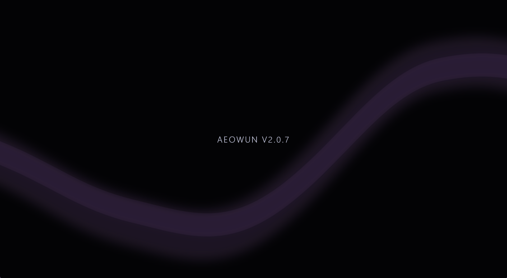

AEOWUN IDE
AN IDE. NOT A CHAT WINDOW.
I wanted an IDE built around the actual project instead of another editor with a bunch of panels bolted onto it. AEOWUN IDE is being built around the files, terminal, runtime, tools, and everything else that actually matters when you're building software.

CODE IS ONLY PART OF THE JOB.
You write code, then you have to run it. You run it, then something breaks. Then you have to figure out what broke, change something, run it again, and somehow keep track of what the hell actually happened.
Most IDEs are good at the editor part. I'm interested in the rest of the loop too.
THE PROJECT STAYS IN THE MIDDLE.
PROJECT
Open a real project and work with its actual filesystem instead of some abstract copy of it.
EDITOR
Edit real files. Save them. Close the IDE. Open it again. The project is still there.
TERMINAL
Use the real Windows shell and the tools that are actually installed on the machine.
RUNTIME
Run the actual project and see what actually happens instead of assuming the code worked.
TOOLS
Keep the stuff you use to build, inspect, debug, and work on the project close at hand.
CHAT
AI can help with the work. It is not the reason the IDE exists.
SOME OF THE GOOD STUFF.
RUST
Rust is being used where I need native control, reliable process management, filesystem work, and a stronger systems-level foundation.
PYTHON
Python remains a first-class part of the environment and gives the IDE a lot of flexibility for tooling and development workflows.
JEDI
Python-aware completion, navigation and code intelligence through Jedi.
TREE-SITTER
Incremental parsing so the IDE can work with the structure of source code instead of treating every file like a big text box.
WINDOWS
Built as a real Windows development environment. Native filesystem behavior, processes, terminal interaction, and desktop integration matter here.
HYBRID
I'm not interested in forcing one language to do everything. Different parts of the system should use the technology that actually fits the job.
DON'T TREAT CODE LIKE A TEXT FILE.
Tree-sitter gives the IDE an actual syntax tree. Jedi gives it deeper Python understanding. That matters because a real IDE needs to know what it is looking at, not just where the characters are.
THIS IS THE PART I CARE ABOUT.
The point isn't to generate code as fast as possible. The point is to build software and actually know what happened when you did it.
OPEN IT. WORK ON IT. COME BACK LATER.
A project is more than a pile of files. There is editor state, terminal work, running processes, configuration, and everything else sitting around the code.
One of the basic rules I'm building around is simple:
Open a real project. Work on it. Restart AEOWUN IDE. Trust what it shows you.
AI IS A TOOL. THE IDE IS THE ENVIRONMENT.
I'm interested in what AI can actually do when it has a real development environment around it.
That means real files. Real commands. Real project state. Real runtime behavior. Real verification.
Not just a chat box telling you what code to paste.
I'M BUILDING IT.
AEOWUN IDE is still in development. The current work is focused on getting the foundation right before piling more intelligence on top of it.
I'm not going to pretend it is finished when it isn't.